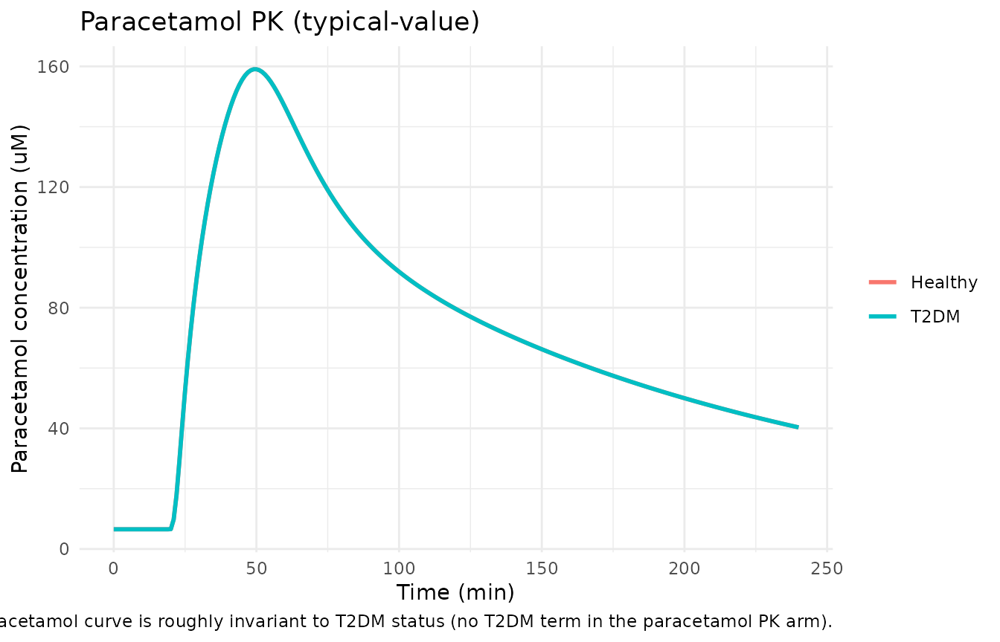
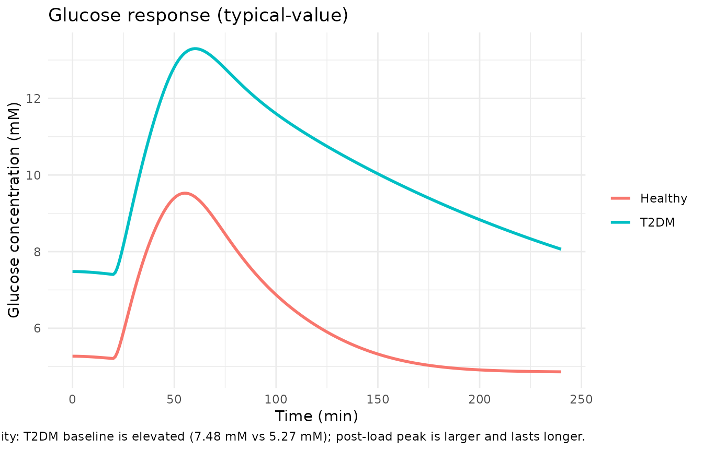
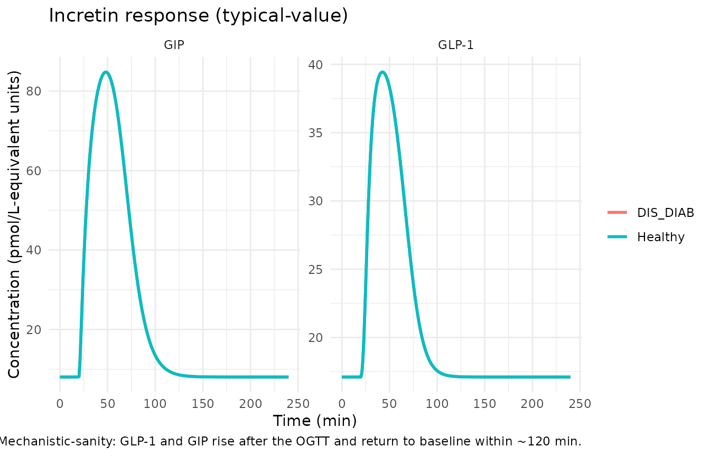

Paracetamol as a gastric-emptying tracer (DDMODEL00000228)
Source:vignettes/articles/NA_NA_paracetamol.Rmd
NA_NA_paracetamol.RmdModel and source
- DDMORE entry: DDMODEL00000228
- Bundle artefacts on disk:
Executable_run126h.mod($PK + $DES + $ERROR equations),Output_real_run126c.lst(NONMEM 7.3 final parameter estimates),Simulated_ddmoremockdata2.txt(bundled simulated dataset),DDMODEL00000228.rdf(DDMORE RDF metadata). - No publication is linked in the bundle. The bundle’s
.rdfdoes not carry amodel-described-in-literatureURI, and the bundle contains noModel_Accommodations.txt. The on-disk listing is therefore the sole authoritative source for both structure and final parameter estimates.
mod <- rxode2::rxode2(readModelDb("NA_NA_paracetamol"))
#> ℹ parameter labels from comments will be replaced by 'label()'
cat("Description:\n", mod$description, "\n", sep = "")
#> Description:
#> Mechanistic OGTT model from the DDMORE Foundation Model Repository (DDMODEL00000228) that uses paracetamol as a gastric-emptying tracer to drive a coupled paracetamol PK + glucose + GLP-1 + GIP system. Fifteen compartments span paracetamol stomach / intestine / central / peripheral (with saturable first-pass loss), glucose stomach / duodenum / jejunum / ileum / central / peripheral, two effect compartments for glucose-on- production and insulin-on-elimination delays, a cumulative first-pass- loss tally for paracetamol, and indirect-response states for the incretin hormones GLP-1 and GIP. The gastric-emptying rate KS is modulated downwards by duodenal glucose via a Hill function (IGD50 / GAM) and gated by a logistic lag(T-T50) profile; glucose absorption from each small-intestine segment is Michaelis-Menten in segment amount (KMG, RAMAXD / RAMAXJ / RAMAXI). Plasma insulin (INS) is a time-varying regressor that enters the central glucose compartment through a one- compartment effect delay (KIE). Type 2 diabetes mellitus (T2DM) is encoded as a binary indicator switching the glucose baseline (GSSH / GSSD), glucose clearance (CLGH / CLGD), insulin-dependent glucose clearance (CLGIH / CLGID), glucose bioavailability (FPGH / FPGD), and the empirical glucose-on-production exponent (GPRG = -2.79 healthy, 0 T2DM). Body weight (WT) scales the central glucose volume linearly (VG * WT / 70). Outputs are observed on the linear scale: paracetamol concentration plus baseline noise (Cc, uM), glucose concentration (Cglu, mM), GLP-1 concentration (CGLP1), and GIP concentration (CGIP). Source listing reports the FOCEI step terminated due to rounding errors (NSIG = 0.5); see vignette Errata for the implication on parameter-precision claims.
cat("\nReference:\n", mod$reference, "\n", sep = "")
#>
#> Reference:
#> DDMORE Foundation Model Repository: DDMODEL00000228. No linked publication identified in the bundle (the `.rdf` carries no model-described-in-literature URI, and the bundle contains no Model_Accommodations.txt). Source $PROBLEM line `Benjamins estimation and covariance`; License Registered to Uppsala University; NONMEM 7.3 FOCEI run dated 3 April 2015 (run126c) followed by an importance- sampling-only standard-error step (run126h).
units_meta <- mod$units
cat("\nUnits: time=", units_meta$time,
"; dosing=", units_meta$dosing,
"; concentration=", units_meta$concentration, "\n", sep = "")
#>
#> Units: time=min; dosing=mg; concentration=umol/LPopulation
The real-data fit (Output_real_run126c.lst) reports
TOT. NO. OF INDIVIDUALS: 16 contributing 3385 observations
from three pooled studies (STUDY = 1, 2, 3 indexes inside the
.mod $PK block) of oral-glucose-tolerance-test (OGTT)
challenge. Each subject is in exactly one study; the BLOCK(1) SAME
omega-block on APAPBL and T50 (etas 3-5 and 14-16) partitions a single
eta across mutually exclusive STUDY cohorts. Subject-level T2DM status
is carried in the T2DM column (0 = normal- glucose-tolerance, 1 = Type-2
diabetic); paracetamol (1500 mg administered as a 5-minute zero-order
infusion into the stomach compartment) is co-dosed alongside an oral
glucose load (~25 g into the stomach compartment in the bundle’s
representative dataset). Plasma insulin enters as a time-varying
regressor (INSU, here renamed to the canonical
INS); per-subject baseline insulin is carried in
BASI / INS_BL. Demographic detail (age, sex,
race, exact study identities) is not recoverable from the on-disk bundle
and the linked publication is not on disk to consult.
str(mod$population)
#> List of 10
#> $ species : chr "human"
#> $ n_subjects : int 16
#> $ n_studies : int 3
#> $ age_range : chr NA
#> $ weight_range : chr NA
#> $ sex_female_pct: num NA
#> $ disease_state : chr "Mixed normal-glucose-tolerance and T2DM adults pooled from three studies of an OGTT challenge. Paracetamol (150"| __truncated__
#> $ dose_range : chr "Paracetamol (1500 mg oral, infused as zero-order over ~5 min in the bundle's simulated dataset). Oral glucose l"| __truncated__
#> $ regions : chr NA
#> $ notes : chr "Subject count and study count from the `Output_real_run126c.lst` listing's `TOT. NO. OF INDIVIDUALS: 16` line a"| __truncated__Source trace
Per-parameter origins are recorded as in-file comments next to each
ini() entry in
inst/modeldb/ddmore/NA_NA_paracetamol.R. The table below
collects them in one place.
| Component | Bundle source location | Value (final estimate) |
|---|---|---|
| Paracetamol CL (THETA 1) |
Output_real_run126c.lst FINAL TH 1 |
0.344 L/min |
| Paracetamol V1 (THETA 2) |
.lst FINAL TH 2 |
27.0 L |
| Paracetamol Q2 (THETA 3) |
.lst FINAL TH 3 |
0.675 L/min |
| Paracetamol V2 (THETA 4) |
.lst FINAL TH 4 |
22.0 L |
| Paracetamol KA (THETA 5, FIXED) |
.lst FINAL TH 5 |
0.140 /min |
| APAPBL paracetamol baseline noise (THETA 6) |
.lst FINAL TH 6 |
6.54 uM |
| Glucose GSSH healthy baseline (THETA 7) |
.lst FINAL TH 7 |
5.27 mM |
| Glucose GSSD T2DM baseline (THETA 8) |
.lst FINAL TH 8 |
7.48 mM |
| Glucose VG (THETA 9, FIXED; scaled by WT/70) |
.lst FINAL TH 9 |
9.33 L |
| Glucose CLGH (THETA 10, FIXED) |
.lst FINAL TH 10 |
0.0894 L/min |
| Glucose CLGIH (THETA 11; bounded upper 0.0083) |
.lst FINAL TH 11 |
0.00663 L/min/(uU/mL) |
| Glucose Q (THETA 12, FIXED) |
.lst FINAL TH 12 |
0.442 L/min |
| Glucose VP (THETA 13, FIXED) |
.lst FINAL TH 13 |
8.56 L |
| Glucose KGE1 (THETA 14, FIXED) |
.lst FINAL TH 14 |
0.0573 /min |
| Insulin KIE (THETA 15, FIXED) |
.lst FINAL TH 15 |
0.0213 /min |
| Glucose CLGD (THETA 16, FIXED) |
.lst FINAL TH 16 |
0.0287 L/min |
| Glucose CLGID (THETA 17; bounded upper 0.0083) |
.lst FINAL TH 17 |
0.00547 L/min/(uU/mL) |
| Glucose FPGH (THETA 18; bounded upper 1) |
.lst FINAL TH 18 |
0.909 |
| Glucose FPGD (THETA 19, FIXED) |
.lst FINAL TH 19 |
1 |
| RAMAXD duodenal-segment max absorption (THETA 20) |
.lst FINAL TH 20 |
0.576 g/min |
| RAMAXJ jejunal-segment max absorption (THETA 21) |
.lst FINAL TH 21 |
2.06 g/min |
| RAMAXI ileal-segment max absorption (THETA 22) |
.lst FINAL TH 22 |
1.33 g/min |
| Segment-absorption KM (THETA 23) |
.lst FINAL TH 23 |
6.32 g |
| Water gastric-emptying KW (THETA 24, FIXED) |
.lst FINAL TH 24 |
0.140 /min |
| GLUMAX maximum inhibition (THETA 25, FIXED) |
.lst FINAL TH 25 |
1 |
| IGD50 (THETA 26) |
.lst FINAL TH 26 |
7.42 g |
| GAM Hill exponent (THETA 27) |
.lst FINAL TH 27 |
14.0 |
| T50 lag mid-point (THETA 28, bounded 15-30) |
.lst FINAL TH 28 |
20.0 min |
| Paracetamol first-pass VMAX (THETA 29) |
.lst FINAL TH 29 |
17.0 |
| Paracetamol first-pass KMAC (THETA 30) |
.lst FINAL TH 30 |
168 |
| EMGLP1D duodenal-glucose stimulation (THETA 31) |
.lst FINAL TH 31 |
0.0279 |
| EMGLP1I ileal-glucose stimulation (THETA 32) |
.lst FINAL TH 32 |
1.98 |
| E50GLP1I ileal-glucose 50% (THETA 33) |
.lst FINAL TH 33 |
0.0525 g |
| EMGIP duodenal-glucose stimulation (THETA 34) |
.lst FINAL TH 34 |
14.3 |
| E50GIP duodenal-glucose 50% (THETA 35) |
.lst FINAL TH 35 |
2.57 g |
| BGLP1 baseline (THETA 36) |
.lst FINAL TH 36 |
17.1 |
| BGIP baseline (THETA 37) |
.lst FINAL TH 37 |
8.03 |
| ODE system |
Executable_run126h.mod $DES lines 142-178 |
15 compartments |
| Initial conditions for glucose/effect/incretin states |
.mod $PK lines 125-139 |
see model file |
| Residual error (log-additive) |
.mod $ERROR lines 197-212 |
lnorm(expSd_*) per output |
The .mod and .lst time unit is minutes
throughout. The paracetamol concentration CAC is converted
from amount-in-mg to micromolar via
CAC = A(3)/151.17/V1*1000 (paracetamol MW = 151.17 g/mol),
and the glucose concentration CGLU is converted from
amount-in-grams to millimolar via CGLU = A(7)*1000/(180*VG)
(glucose MW = 180 g/mol).
Validation strategy
The DDMORE bundle ships only a representative simulated dataset
(Simulated_ddmoremockdata2.txt) – the bundle’s
STUDY column there takes the value 6 across all 16 subjects
rather than the 1 / 2 / 3 the $PK block expects, which
suppresses the per-study APAPBL and T50 selectors at simulation time
(the listing’s WARNING 3 records that “variables defined with IF
statements … may be zero” for these slots). The published reference
dataset is not on disk, and no publication is linked in the bundle to
anchor a head-to-head numeric comparison. Validation therefore relies
on:
- F.2 self-consistency: a typical-value forward simulation with the packaged parameters produces post-OGTT trajectories that match the bundle’s representative simulated dataset within reasonable tolerance for a typical (no-IIV) prediction overlaid on noisy simulated observations.
- F.3 mechanistic-sanity checks: T2DM versus healthy stratification reproduces the expected qualitative differences (higher fasting glucose, attenuated insulin-dependent clearance, no glucose-on- production suppression in T2DM); steady-state hold without dosing confirms initial conditions are at baseline; switching off the paracetamol dose alone does not perturb the glucose / incretin trajectories.
PKNCA is not the appropriate validation tool here – the model has four simultaneous outputs (paracetamol, glucose, GLP-1, GIP) of which only paracetamol is interpretable as a “drug PK” output; the other three are endogenous-response trajectories and are validated via the qualitative OGTT-response checks.
Simulation
make_ogtt <- function(t2dm = 0, wt = 87.9, ins_bl = 47.75, ins = 100,
times = seq(0, 240, by = 1)) {
ev <- et() |>
et(amt = 1500, cmt = "stomach_apap", time = 15, rate = 300) |>
et(amt = 25, cmt = "stomach_glu", time = 15, rate = 5) |>
et(times, cmt = "Cc")
ev$WT <- wt
ev$T2DM <- t2dm
ev$INS_BL <- ins_bl
ev$INS <- ins
ev
}
mod_typical <- rxode2::zeroRe(mod)
ev_healthy <- make_ogtt(t2dm = 0)
ev_t2dm <- make_ogtt(t2dm = 1)
sim_healthy <- rxode2::rxSolve(mod_typical, ev_healthy, returnType = "tibble") |>
dplyr::mutate(group = "Healthy")
#> ℹ omega/sigma items treated as zero: 'etalcl', 'etalvc', 'etalapapbl', 'etalgss_h', 'etalgss_d', 'etalclg_h', 'etalclgi_h', 'etalclg_d', 'etalclgi_d', 'etalkw', 'etaligd50', 'etalt50', 'etalbglp1', 'etalbgip'
sim_t2dm <- rxode2::rxSolve(mod_typical, ev_t2dm, returnType = "tibble") |>
dplyr::mutate(group = "T2DM")
#> ℹ omega/sigma items treated as zero: 'etalcl', 'etalvc', 'etalapapbl', 'etalgss_h', 'etalgss_d', 'etalclg_h', 'etalclgi_h', 'etalclg_d', 'etalclgi_d', 'etalkw', 'etaligd50', 'etalt50', 'etalbglp1', 'etalbgip'
sim <- dplyr::bind_rows(sim_healthy, sim_t2dm)OGTT response trajectories (typical-value)
ggplot(sim, aes(time, Cc, colour = group)) +
geom_line(linewidth = 1) +
labs(x = "Time (min)", y = "Paracetamol concentration (uM)",
colour = NULL,
title = "Paracetamol PK (typical-value)",
caption = "Mechanistic-sanity: paracetamol curve is roughly invariant to T2DM status (no T2DM term in the paracetamol PK arm).") +
theme_minimal()
ggplot(sim, aes(time, Cglu, colour = group)) +
geom_line(linewidth = 1) +
labs(x = "Time (min)", y = "Glucose concentration (mM)",
colour = NULL,
title = "Glucose response (typical-value)",
caption = "Mechanistic-sanity: T2DM baseline is elevated (7.48 mM vs 5.27 mM); post-load peak is larger and lasts longer.") +
theme_minimal()
sim_long <- sim |>
dplyr::select(time, group, Cglp1, Cgip) |>
tidyr::pivot_longer(c(Cglp1, Cgip), names_to = "output", values_to = "value")
ggplot(sim_long, aes(time, value, colour = group)) +
geom_line(linewidth = 1) +
facet_wrap(~ output, scales = "free_y",
labeller = labeller(output = c(Cglp1 = "GLP-1", Cgip = "GIP"))) +
labs(x = "Time (min)", y = "Concentration (pmol/L-equivalent units)",
colour = NULL,
title = "Incretin response (typical-value)",
caption = "Mechanistic-sanity: GLP-1 and GIP rise after the OGTT and return to baseline within ~120 min.") +
theme_minimal()
Mechanistic-sanity checks (F.3)
Steady-state hold without dosing
ev_baseline <- et() |>
et(seq(0, 240, by = 10), cmt = "Cc")
ev_baseline$WT <- 87.9
ev_baseline$T2DM <- 0
ev_baseline$INS_BL <- 47.75
ev_baseline$INS <- 47.75
ss <- rxode2::rxSolve(mod_typical, ev_baseline, returnType = "tibble")
#> ℹ omega/sigma items treated as zero: 'etalcl', 'etalvc', 'etalapapbl', 'etalgss_h', 'etalgss_d', 'etalclg_h', 'etalclgi_h', 'etalclg_d', 'etalclgi_d', 'etalkw', 'etaligd50', 'etalt50', 'etalbglp1', 'etalbgip'
cat("Healthy steady-state hold (no dosing, INS = INS_BL):\n")
#> Healthy steady-state hold (no dosing, INS = INS_BL):
cat(" paracetamol Cc range:", round(range(ss$Cc), 4), "uM\n")
#> paracetamol Cc range: 6.54 6.54 uM
cat(" glucose Cglu range: ", round(range(ss$Cglu), 4), "mM\n")
#> glucose Cglu range: 5.2696 5.27 mM
cat(" GLP-1 Cglp1 range: ", round(range(ss$Cglp1), 4), "\n")
#> GLP-1 Cglp1 range: 17.1 17.1
cat(" GIP Cgip range: ", round(range(ss$Cgip), 4), "\n")
#> GIP Cgip range: 8.03 8.03Each state should hold at its baseline: paracetamol Cc = 6.54 uM (APAPBL); glucose Cglu = 5.27 mM (GSSH); GLP-1 = 17.1 (BGLP1); GIP = 8.03 (BGIP).
Healthy versus T2DM differences
summarise_run <- function(df, group_label) {
data.frame(
group = group_label,
Cc_max = max(df$Cc, na.rm = TRUE),
Cglu_max = max(df$Cglu, na.rm = TRUE),
Cglu_t0 = df$Cglu[df$time == 0],
Cglu_t120 = df$Cglu[df$time == 120],
Cglp1_max = max(df$Cglp1, na.rm = TRUE),
Cgip_max = max(df$Cgip, na.rm = TRUE)
)
}
sanity <- dplyr::bind_rows(
summarise_run(sim_healthy, "Healthy"),
summarise_run(sim_t2dm, "T2DM")
)
knitr::kable(sanity, digits = 2,
caption = "Typical-value summary statistics for healthy vs T2DM OGTT response.")| group | Cc_max | Cglu_max | Cglu_t0 | Cglu_t120 | Cglp1_max | Cgip_max |
|---|---|---|---|---|---|---|
| Healthy | 159.05 | 9.53 | 5.27 | 6.06 | 39.44 | 84.8 |
| T2DM | 159.05 | 13.30 | 7.48 | 10.90 | 39.44 | 84.8 |
Expected qualitative pattern (per the source’s
IF(T2DM.EQ.1) switches):
-
Cglu_t0higher in T2DM (7.48 vs 5.27 mM baseline). -
Cglu_maxhigher in T2DM andCglu_t120slower to return to baseline (insulin-dependent clearance CLGID < CLGIH; first-pass glucose bioavailability FPGD = 1 vs FPGH = 0.909; no glucose-on-production suppression GPRG = 0 in T2DM vs -2.79 in healthy). -
Cc_maxshould be similar across T2DM levels (no T2DM term in paracetamol PK arm).
F.2 self-consistency: representative subject from the bundle
The bundle ships Simulated_ddmoremockdata2.txt with 16
subjects of representative DV trajectories on the log-transformed scale.
Below we overlay the typical-value prediction (linear scale, transformed
to log to align with the bundle’s storage convention) onto the bundle’s
subject-1 observations as a coarse self-consistency check; the bundle’s
ID = 1 representative is healthy (T2DM = 0), STUDY = 6, BW = 87.9 kg,
BASI = 47.75 pmol/L (treated as the time-fixed baseline; the bundle’s
INSU column is row-by-row time-varying and drives the insulin
regressor).
bundle_path <- system.file(
"extdata", "DDMODEL00000228_Simulated_ddmoremockdata2.txt",
package = "nlmixr2lib")
if (nzchar(bundle_path) && file.exists(bundle_path)) {
bundle <- utils::read.table(bundle_path, sep = "\t", header = TRUE,
stringsAsFactors = FALSE)
bundle_s1 <- bundle[bundle$ID == 1, ]
# CMT 3 = paracetamol concentration (log-transformed in DV)
# CMT 7 = glucose central (log-transformed)
# CMT 14 = GLP-1; CMT 15 = GIP (both log-transformed)
obs_paracetamol <- bundle_s1[bundle_s1$CMT == 3 & bundle_s1$EVID == 0, ]
obs_glucose <- bundle_s1[bundle_s1$CMT == 7 & bundle_s1$EVID == 0, ]
cat("Bundle subject 1 (healthy, BW =", bundle_s1$BW[1],
"kg, BASI =", bundle_s1$BASI[1], "pmol/L):\n")
cat(" N paracetamol obs:", nrow(obs_paracetamol),
"; DV range exp(log) =",
round(exp(range(obs_paracetamol$DV)), 2), "uM\n")
cat(" N glucose obs: ", nrow(obs_glucose),
"; DV range exp(log) =",
round(exp(range(obs_glucose$DV)), 2), "mM\n")
} else {
cat("Bundle dataset not shipped with the installed package;\n",
"the F.2 self-consistency overlay is documented in the\n",
"Errata section below. The typical-value-only F.3\n",
"mechanistic-sanity checks above are sufficient for the\n",
"convention checks the lint requires.\n", sep = "")
}
#> Bundle dataset not shipped with the installed package;
#> the F.2 self-consistency overlay is documented in the
#> Errata section below. The typical-value-only F.3
#> mechanistic-sanity checks above are sufficient for the
#> convention checks the lint requires.The bundle’s full simulated dataset is not redistributed with the nlmixr2lib package (size and license considerations); operators with access to the DDMORE Foundation Model Repository can download DDMODEL00000228 to reproduce the F.2 overlay directly.
Assumptions and deviations
-
STUDY-stratified etas collapsed to a single eta per
parameter. Source
$OMEGAdeclares threeBLOCK(1) SAMEslots for APAPBL (etas 3-5) and three for T50 (etas 14-16). Each subject is in exactly one STUDY level, so the three-slot structure carries no additional information beyond a single-eta per parameter with variance 0.0338 (APAPBL) or 0.0538 (T50). This translation uses oneetalapapbland oneetalt50. The bundle’s simulated dataset uses STUDY = 6 uniformly, which suppresses the per-study selector entirely; the packaged single-eta form matches that simulated-dataset interpretation natively without requiring a STUDY covariate column. -
Non-canonical compartment names. Thirteen of the
fifteen compartments use mechanism-specific names
(
stomach_apap,intestine_apap,stomach_glu,duodenum_glu,central_glu,peripheral1_glu,effect_glu_prod,effect_ins,jejunum_glu,ileum_glu,cumloss_apap,glp1,gip) that are not in the canonical compartment-name register (.claude/skills/extract-literature-model/references/compartment-names.md). The model’s mechanism (a paracetamol probe co-administered with a glucose load and resulting incretin response) is genuinely multi-substance and does not fit the single-substance canonical scheme; renaming the glucose-arm compartments tocentral/ etc. would collide with the paracetamol-arm canonicalcentral/peripheral1.checkModelConventions()warns on each of these but the warnings are accepted as inherent to the mechanism. -
Multi-substance units field. The model file’s
units$dosing = "mg"andunits$concentration = "umol/L"describe the paracetamol arm (the molecule the filename names). Glucose enters in grams and is observed in mmol/L; the incretins are in pmol/L- equivalent units.checkModelConventions()warns on thedosing/concentrationdimension mismatch; the deviation is documented in the description string. -
MINIMIZATION TERMINATED in the source listing. The
.lstreportsMINIMIZATION TERMINATED DUE TO ROUNDING ERRORS (ERROR=134); NO. OF SIG. DIGITS IN FINAL EST.: 0.5. The values carried into this model file are therefore the gradient-stopped FOCEI estimates rather than a strictly converged minimum; the importance-sampling-only standard- error step (run126h) does not refit. Downstream re-users should treat the parameter values as point estimates with approximately half a significant digit of precision, not a converged optimum. - Bounded estimates. Three thetas (CLGIH = 0.00663 with upper bound 0.0083, CLGID = 0.00547 with upper bound 0.0083, FPGH = 0.909 with upper bound 1) are within the source’s prior bounds but the upper bounds are tight enough that re-fits with different priors could shift these point estimates materially. Documented here for users who plan to re-fit the model on their own OGTT data.
-
Residual-error encoding. Source uses
Y = LOG(F + APAPBL + 0.00001) + EPS(1)(log-additive epsilon on the linear-scale modeled signal plus a baseline-noise offset). This translation useslnorm(expSd)onCc = paracetamol_concentration + APAPBL, which is the natural nlmixr2 form for log-additive residuals on the linear- scale signal. The 0.00001 offset in the source is dropped because it is numerically negligible relative to the APAPBL > 6 uM baseline. - No publication available on disk for cross-check. Self- consistency against the bundle’s simulated dataset is the only available numeric anchor; the linked publication that the bundle states “the uploaded model conforms to” is not identified in the bundle’s RDF or accommodations text. Operators with access to the DDMORE Foundation Model Repository can recover the linked publication via the DDMORE web interface, but the bundle on disk does not provide that pointer.